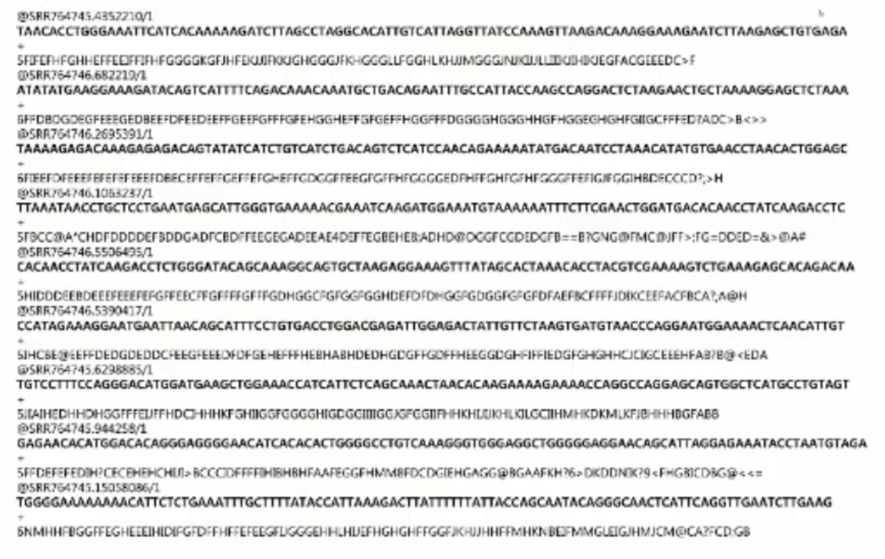

4.2 NGS의 기초
- 유전자 분석을 위한 기술을 한사람이 아닌 모두에게 적용하기 위해 NGS 기술이 개발됨
4.2.1 Precision medicine
- Sequencing is a key to the precision medicine
- Fast, accurate, cheap sequencing technologies
- Can NGS detect all kinds of genomic variants?
4.2.2 Next generation sequencing
- No cloning: DNA to be sequenced is used to construct a library of fragments that have synthetic DNAs added covalently to each fragment end by use of DNA ligase
- Amplification can be done in parallel
- Sequencing can be done in parallel
4.2.3 Raw data (FASTQ)
- 4줄 단위로 반복
- 첫번째줄은 “@” 로 시작, read ID
- 두번째줄은 읽어낸 read sequencing
- 세번째줄은 “+”
- 네번째줄은 두번째줄과 동일한 길이, 염기서열과 1:1로 매칭, 읽어낸 염기의 정확성

- 현재 데이터 형태로는 사실 아무것도 할 수 없음
- 일단 어느 위치에서 이 데이터가 왔는 지 부터 확인
- Reference genome (from HGP)을 활용하여 mapping back to genome
- Where is this sequence in human genome?
4.2.4 Aligment (BAM file)
- FASTQ + 위치정보
- 어느 염색체, 어느 위치인지 정보를 포함
- IGV (Integrative Genomics Viewer): BAM파일이 어떠한 형태로 Reference genome에 붙어 있는가?
- Reference genome와 비교하여 다른 부분이 있는가?
- read depth: the number of reads that pass the region
- 같은 자리를 여러번 읽음으로써 오류를 최대한 줄이는 방식
- In a whole sample
- The average number read depth
- R.D = N.read * read_length (total read_bp) / genome.length
- if we have 100,000,000 reads of 200 bps for whole genome sequencing (R.D = 6.66)
- for exome sequencing (R.D = 400)
4.2.5 WGS WES, and targeted sequencing
- WES vs Panel
- Advantages of targeting all exons
- Discovery based research
- “you don’t know what genes you need to target”
- WES is the obvious choice
- Commercially available (no customized or designed)
- Standard servie ($550-800) for 100-150x mean
- Advantages of targeting gene panels 7
- Ideal for analyzing specific mutations or genes (association wi disease)
- Higher depth (2000-10000x)
- High depth sequencing enables the identification of rare variants
- Can be customized for different samples types
- Lower input amounts can be used with targeted gene panels (1ng vs 100ng with WES)
- Can be customized to only include genomic regions of interest
- Gene panel workflows are a lot simpler (much less time)
- You can process thousands of samples on a single sequencing run. Targeted gene panels can be run at a higher throughput and are often more cost-effective than whole exome sequencing
- Advantages of targeting all exons
4.2.6 Target enrichment analysis
- PCR
- Amplicon-based assay
- Hybridization capture-based assay
Summary
1. NGS sequencing은 인간 전체 유전체를 빠르고 값싸게 읽을 수 있는 수단을 제공한다.
2. NGS는 no-cloning, parallel amplification, parallel sequencing을 통하여 이루어진다.
3. Raw read - aligned read (to reference) 를 통하여 원본 read의 위치를 찾을 수 있다.
4. 목적에 따라 전체 유전체 영역, 일부 유전체 영역을 선택하여 진행할 수 있다.